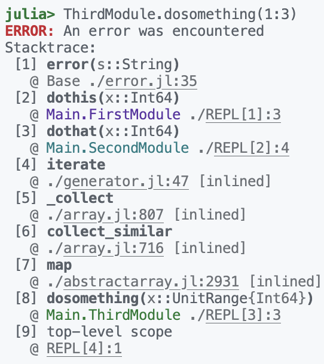

Getting colored Julia terminal output into blog posts
Syntax highlighting greatly helps to parse and understand code. When I write blog posts, I care a lot about making it easy for readers to understand everything, therefore syntax highlighting is a must.
Compare this plain Julia code
function some_function(a::Int, b::Float64)
@info "Printing $a and $b"
print(a, " and ", b)
endto a syntax-highlighted version:
function some_function(a::Int, b::Float64)
@info "Printing $a and $b"
print(a, " and ", b)
endColor helps to split the different tokens apart. It’s very easy for us to find an element of a certain color in a background of different colors, the phenomenon is called pop-out search.
Terminal output is not code
Syntax highlighting works great for actual code, but in some tutorials, I just want to show how it looks when running Julia commands in the REPL. Many functions print colored output because that makes it easier to parse. Let’s take stack traces for example. These are especially long and hard to parse in Julia, so a while ago I made a PR to Julia to add color and organize them a bit more clearly. However, when I want to show them in a blog post, the colors are messed up because the syntax highlighting applies code rules to text that is not code. The syntax highlighter cannot know what styles were programmed into the printing functions. Let’s take this code for example:
module FirstModule
export dothis
dothis(x) = error("An error was encountered")
end
module SecondModule
using Main.FirstModule
export dothat
dothat(x) = dothis(x)
end
module ThirdModule
using Main.SecondModule
dosomething(x) = map(dothat, x)
endWhen I run dosomething, I get this in plain text, which I find very hard to read:
julia> ThirdModule.dosomething(1:3)
ERROR: An error was encountered
Stacktrace:
[1] error(s::String)
@ Base ./error.jl:35
[2] dothis(x::Int64)
@ Main.FirstModule ./REPL[1]:3
[3] dothat(x::Int64)
@ Main.SecondModule ./REPL[2]:4
[4] iterate
@ ./generator.jl:47 [inlined]
[5] _collect
@ ./array.jl:807 [inlined]
[6] collect_similar
@ ./array.jl:716 [inlined]
[7] map
@ ./abstractarray.jl:2931 [inlined]
[8] dosomething(x::UnitRange{Int64})
@ Main.ThirdModule ./REPL[3]:3
[9] top-level scope
@ REPL[4]:1If I paste it in Julia syntax mode, I get this from the syntax highlighter:
julia> ThirdModule.dosomething(1:3)
ERROR: An error was encountered
Stacktrace:
[1] error(s::String)
@ Base ./error.jl:35
[2] dothis(x::Int64)
@ Main.FirstModule ./REPL[1]:3
[3] dothat(x::Int64)
@ Main.SecondModule ./REPL[2]:4
[4] iterate
@ ./generator.jl:47 [inlined]
[5] _collect
@ ./array.jl:807 [inlined]
[6] collect_similar
@ ./array.jl:716 [inlined]
[7] map
@ ./abstractarray.jl:2931 [inlined]
[8] dosomething(x::UnitRange{Int64})
@ Main.ThirdModule ./REPL[3]:3
[9] top-level scope
@ REPL[4]:1This is better because at least typing information is visually split, as are numbers, but it’s not close to what my editor looks like in this screenshot:

The benefit of the original is that the three modules have different colors and each function name is consistently bolded, not just those with () like in the syntax-highlighted version.
Can’t you just copy the code with styling?
VSCode offers the option to “Copy as HTML” but the output of that looks a bit like this:
<meta charset='utf-8'><html><body><!--StartFragment--><pre>
<div style='color: #000000; background-color: #ffffff; font-family: Menlo, Monaco, 'Courier New', monospace; font-size: 12px;'>
<div>
<span></span><span style='color: #28a745; font-weight: bold;'>julia> </span><span>ThirdModule.dosomething(1:3) </span></div><div><span></span><span style='color: #cb2431; font-weight: bold;'>ERROR: </span><span>An error was encountered </span></div><div><span>Stacktrace: </span>
</div>
<div><span> [1] </span><span style='font-weight: bold;'>error(</span>So colors and fonts are encoded as they were in the terminal, which might be ok for copying to a Word document, but it’s not practical for a blog. I might want to edit my color theme in the future, separately from what I used when running the code.
Copying the original REPL output
Colors and styles like bold and underlined are encoded as ANSI escape codes in the REPL output which gets sent to the terminal. The terminal then interprets these symbols. So the idea I had was to just store the output from a Julia session in a separate file, including the escape codes, then transform this representation into html that I can style separately.
Storing the output is not difficult, you can use this command to start a Julia session that logs all output to a text file, here I just typed 1+1 and then enter. The REPL session looked like this:
julia> 1+1
2
julia>The command to record was this:
julia --banner=no --color=yes 2>&1 | tee julia.txtThe output file looked like this instead:
\e[?2004h\r\e[0K\e[32m\e[1mjulia> \e[0m\e[0m\r\e[7C\r\e[7C1+1\r\e[0K\e[32m\e[1mjulia> \e[0m\e[0m\r\e[7C1+1\r\e[10C
\e[?2004l\e[0m\e[0m2
\r\e[0K\r\e[0K\e[32m\e[1mjulia> \e[0m\e[0m\r\e[7C\r\e[7C\e[?2004h\r\e[0K\e[32m\e[1mjulia> \e[0m\e[0m\r\e[7C\r\e[7C
\e[?2004l\e[0mAs you can see, this is not directly useable for copying to a blog post. And if you look closely, you can see that 1+1 appears twice instead of just once, and the julia> prompt appears four times instead of just twice. Why is that?
The reason is that the REPL can’t just add characters, it can also remove them, even though all of the commands to do that are printed into the final text output. For example the \r character, or carriage return, removes every character back to the beginning of the current line. That’s why julia and 1+1 appears multiple times, because for the final visual result it got deleted again via \r. There’s also other commands that can move the cursor left or right, so that the following printed characters don’t appear at the end but somewhere in between, where they overwrite other characters. Just like in a terminal, in fact.
So how can we get to an html representation of the final output? We have to go through the output character by character and try to emulate what the terminal would have done.
Faking a terminal with Rust
After googling around for a bit, I found that there are prewritten libraries that can parse strings which contain ANSI escape codes. One of them was the Rust crate vte, and because I wanted to learn Rust anyway, I chose to go with that.
The parser goes through the text bit by bit and calls different callback functions depending on what kind of escape sequence was read. I chose to store a vector of Chars and a vector of a custom style-information struct. I then implemented basic movement of a cursor along this buffer, so that \r and cursor commands could have the desired effect. So far, I pretend the virtual terminal has unlimited width and height, which would definitely give the wrong result with some special movement codes. But Julia doesn’t seem to use any codes that depend on screen size, just on the location of newlines, so even the barebones version works well.
The work-in-progress code of vte2html is on GitHub if you want to take a look.
Once the full input has been read, the final vectors of chars and styles are converted into <span> tags with text in between. The 16 terminal colors are converted into special classes like sgr-fg-1 for the first foreground color (SGR means “Select Graphic Rendition” which is what the subgroup of ANSI codes for visual style are called), so that I can apply whatever colorscheme I want with a css stylesheet.
I could now convert the text output to html, which looks like this:
<span class="sgr-bold sgr-fg-3">julia> </span>1+1
2
<span class="sgr-bold sgr-fg-3">julia> </span>So this is very clean and useable html. I wrote a tiny lua filter so I could paste this into a quarto document and have the correct styles applied, which gives this final output. I styled the div a bit like a MacOS window so that it’s clear this was the output in a window once, not source code:
julia> 1+1
2
julia>